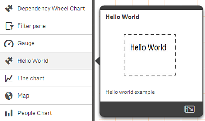
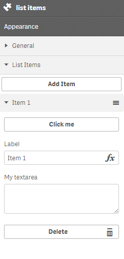

qext file
{
"name": "my-extension",
"description": "Hello world example",
"icon": "line-chart",
"preview": "helloworld.png",
"type": "visualization",
"version": 1.0.0,
"author": "Qlik International"
}
[mandatory] the display name of the web-extension
(not to be confused with the uniqueName or
uniqueID)
[optional]
- bar-chart-vertical
- extension
- filterpane
- gauge-chart
- line-chart
- list
- map
- pie-chart
- scatter-chart
- table
- text-image
- treemap
"icon": "my-image.png"
[optional]

[mandatory] the web extension type
the other types are:
- mashup
- widget-library
- themes
- custom-component
- visualization-template
- mashup-template
define( ['qlik'], function(qlik){
return {
initialProperties: {...},
definition: {...},
support: {...},
beforeDestroy: function(){},
mounted: function(){},
updateData: function (layout) {},
paint: function ($element, layout) {},
};
});
initialProperties : {
qHyperCubeDef : {
qDimensions : [],
qMeasures : [],
qInitialDataFetch : [{
qWidth : 2,
qHeight : 50
}]
},
selectionMode : "CONFIRM"
}
|
Define either as a
- hypercube (qHyperCubeDef)
- list object (qListObjectDef).
|
|

|
Property Panel definitions:
- Array
- Integer
- Number
- String
- Text
- Button
- Button group
- Check box
- Color-picker
- Drop down list
- Link
- Media
- Radio button
- Slider
- Range-slider
- Switch
- Textarea
|
support: {
snapshot: true,
export: true,
exportData: true
}
|
Enable/disable support for
- snapshot
- export as Image or PDF
- export data
|
Mostly used for clearing events & bindings preventing memory-leaks.
Runs once when the object is initializing.
Runs every time the layout or data changes, a new layout and returns a promise.
Renders the visualization extension.